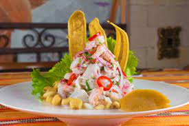
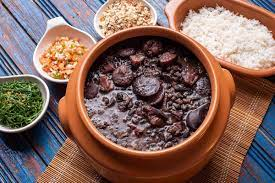
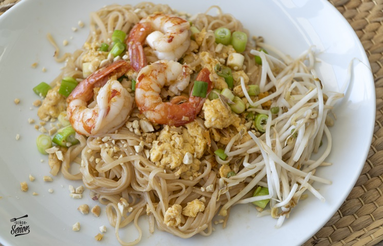
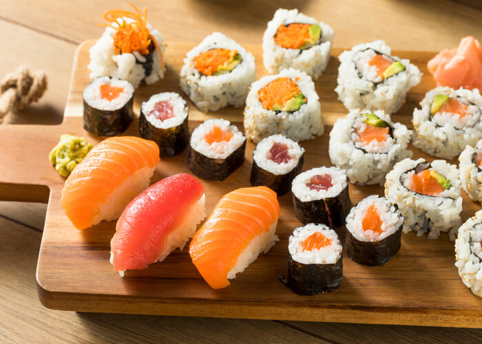
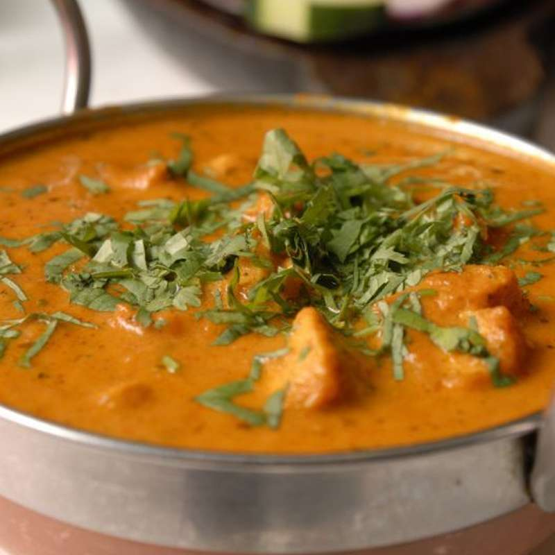
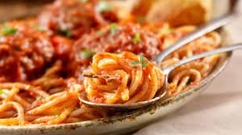
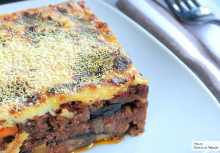
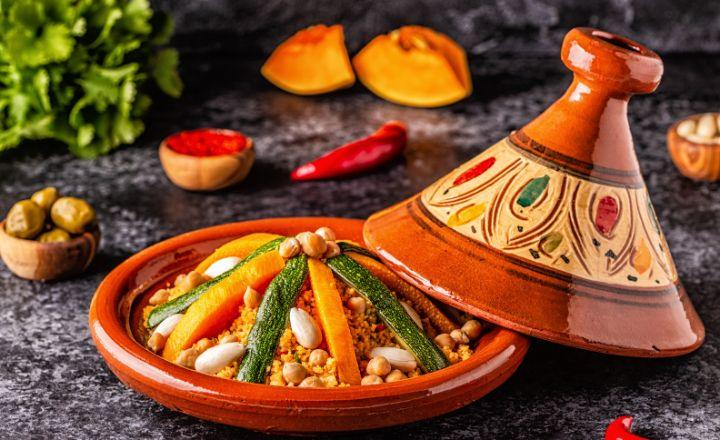
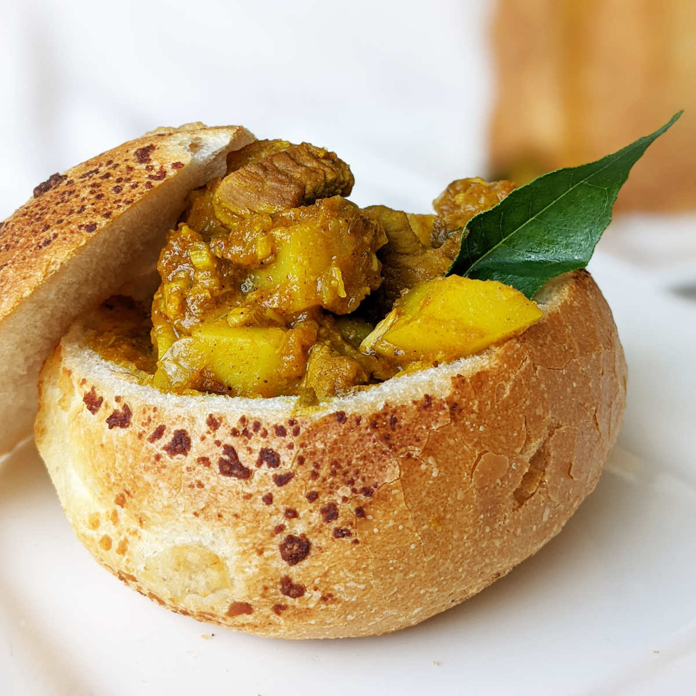
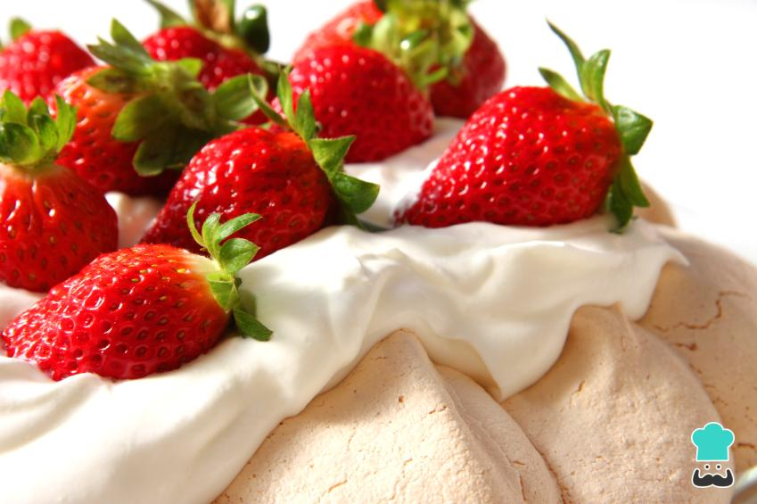

Ceviche Peruano: Fresco y picante, este plato de pescado marinado en limón es una delicia peruana.

Tacos Mexicanos: ¡Nada como la combinación de tortillas de maíz, carne asada y una variedad de salsas!
Feijoada Brasileña: Este guiso de frijoles negros con carne de cerdo es un clásico de la cocina brasileña.

Asia:
Pad Thai Tailandés: Fideos de arroz salteados con camarones, tofu, huevo y cacahuetes, condimentados con salsa de tamarindo.

Sushi Japonés: Una mezcla de arroz y pescado crudo enrollado en algas nori, con infinitas variedades para elegir.

Curry Indio: Ya sea de pollo, cordero o verduras, el curry indio es siempre una explosión de sabores exóticos.

Europa:
Paella Española: Un arroz amarillo y sabroso cocinado con mariscos, pollo y chorizo, aromatizado con azafrán.
Pasta Italiana: Desde un simple spaghetti al pomodoro hasta una lujosa lasaña, la pasta italiana ofrece infinitas posibilidades.

Moussaka Griega: Capas de berenjena, carne picada y salsa de tomate, cubiertas con una cremosa bechamel y horneadas hasta obtener un dorado perfecto.

África:
Tagine Marroquí: Un estofado aromático de carne, pollo o cordero cocinado con frutas secas y especias, servido con cuscús.

Bunny Chow Sudafricano: Un pan redondo ahuecado lleno de curry picante, una delicia callejera popular en Sudáfrica.

Oceanía:
Pavlova Australiana: Un postre ligero y esponjoso hecho de merengue, cubierto con crema batida y frutas frescas.

Hangi Neozelandés: Una técnica de cocción maorí en la que los alimentos se cocinan bajo tierra con piedras calientes, produciendo carnes y verduras jugosas y sabrosas.


.jpg)